A scripting or script language is a programming language that supports scripts, programs written for a special run-time environment that automate the execution of tasks that could alternatively be executed one-by-one by a human operator. Scripting languages are often interpreted (rather than compiled).
A compiled language is a programming language whose implementations are typically compilers (translators that generate machine code from source code), and not interpreters (step-by-step executors of source code, where no pre-runtime translation takes place). The term is somewhat vague.
LAMP is an archetypal model of web service solution stacks, named as an acronym of the names of its original four open-source components: the Linux operating system, the Apache HTTP Server, the MySQL relational database management system (RDBMS), and the PHP programming language. The LAMP components are largely interchangeable and not limited to the original selection. As a solution stack, LAMP is suitable for building dynamic web sites and web applications.
MEAN is a free and open-source JavaScript software stack for building dynamic web sites and web applications. The MEAN stack makes use of MongoDB, Express.js, Angular, and Node.js. Because all components of the MEAN stack support programs are written in JavaScript, MEAN applications can be written in one language for both server-side and client-side execution environments.
Python-Django Django is a free and open-source web framework, written in Python, which follows the model-view-template (MVT) architectural pattern.[5][6] It is maintained by the Django Software Foundation (DSF), an independent organization established as a 501(c) non-profit.
Django's primary goal is to ease the creation of complex, database-driven websites. Django emphasizes reusability and "pluggability" of components, rapid development, and the principle of don't repeat yourself. Python is used throughout, even for settings files and data models. Django also provides an optional administrative create, read, update and delete interface that is generated dynamically through introspection and configured via admin models. Some well-known sites that use Django include Pinterest,Instagram,Mozilla,The Washington Times, Disqus, the Public Broadcasting Service, Bitbucket,and Nextdoor.
Ruby on Rails, or simply Rails, is a web application framework written in Ruby under the MIT License. Rails is a model-view-controller (MVC) framework, providing default structures for a database, a web service, and web pages. It encourages and facilitates the use of web standards such as JSON or XML for data transfer, and HTML, CSS and JavaScript for display and user interfacing. In addition to MVC, Rails emphasizes the use of other well-known software engineering patterns and paradigms, including convention over configuration (CoC), don't repeat yourself (DRY), and the active record pattern.
Swift is a general-purpose, multi-paradigm, compiled programming language developed by Apple Inc. for iOS, OS X, watchOS, tvOS, and Linux. Swift is designed to work with Apple's Cocoa and Cocoa Touch frameworks and the large body of extant Objective-C (ObjC) code written for Apple products. Swift is intended to be more resilient to erroneous code ("safer") than Objective-C, and more concise. It is built with the LLVM compiler framework included in Xcode 6 and later and, on platforms other tan Linux,[11] uses the Objective-C runtime library, which allows C, Objective-C, C++ and Swift code to run within one program.
Insert a comment: